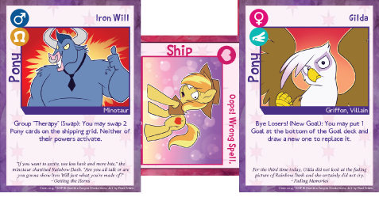

"Once upon a time, in the land of Equestria, three ponies drank a bit too much cider and decided to play a game. Their records were recorded below. For science."
A long time ago, on a sweltering summer night...
Twilight Sparkle, Cadance, and Shining Armor sit next to the fireplace, looking at a purple box of cards. Shining Armor wears the face of a pony who's much, much too tired for this. "Okay. Explain this to me, one more time."
Twilight clears her throat. "Sure, big brother. You know the portal down in the basement? The one that lets you cross between worlds?"
"Yes..."
"Well, I got curious, and started running some magic experiments to understand it better. I actually managed to get in contact with other worlds! Besides the one Sunset lives in, I mean. It was fun for a bit, but the potential got really scary and I decided to drop it."
"Okay, so how does that explain...this?"
Shining gestures to the box of cards, labeled "Twilight Sparkle's Secret Shipfic Folder".
"Right, right. That popped out of the portal one day. In the universe where that came from, we're fictional. And where there's fiction-"
"There's fanfiction," Shining Armor says. "Why do you want to play this, Twilight? Isn't this making fun of you?"
"It's not making fun of me. It's more like it makes fun of another version of me that I wouldn't want to be? I'll be honest, I'm not thrilled about it, but I figure every game is worth trying at least once. Or exactly once, in this case."
"Well, I think giving it a go is a wonderful idea!" Princess Cadance says.
Shining sighs. "Dear, of course you're for this, your cutie mark is literally a heart."
"Come on, just give it a try. For me? Just think of it like Cards Against Equinity - what happens in the game doesn't reflect anything on you."
Shining Armor sighs even harder, then smiles. "Alright."
Twilight claps her hooves. "Right, so it's settled! I'll go first. Cadance can go second. Shining, you go third."
They start dealing out cards. "Alright, let's take a look at the rules."
This puzzle is based on the game Twilight Sparkle's Secret Shipfic Folder, a card game parodying the tropes and storytelling conventions in poorly written romantic fanfiction. It was created by Horrible People Games, which closed in 2015, and is now maintained by fans under the name Children of Kefentse. Unlike other puzzles, there's nothing fishy going on here: simply follow along the game until the end, and the answer will present itself.
We've provided some basic rules and clarifications below, and you shouldn't need more to solve the puzzle, but the full rules of Secret Shipfic Folder are available at http://tinyurl.com/tsssf-rules.
This puzzle uses only cards from the Base Set of the game (Core 1.1.6). A PDF of all card images from the Base Set (66 MB download) can be downloaded here.
You play as Fanfic Author Twilight, a version of Twilight Sparkle who likes writing shipfics about ponies she knows. Each player takes turns playing Ship cards and Pony cards to expand the Shipping Grid, joining new characters to an ever-expanding network of relationships. Players earn points by achieving Narrative Goals, which are worth points.
At the start of the game, place the Start card (Fanfic Author Twilight) at the center of the grid. Each player draws a starting hand of Pony cards and Ship cards. Deal out 3 Goal cards. These are the initial Narrative Goals, and more will be dealt out as they are achieved.
Each player may play as many cards as they want each turn. The moment a Goal's requirements are met, the current player earns that Goal. At the end of their turn, they draw back up to 7 cards in hand, then deal out new Goal cards if needed.
To add to the Shipping Grid, players can either play a new Pony card next to an existing Pony, playing a Ship card between them, or they can play a Ship card connecting two ponies who are next to each other, but not shipped.

Iron Will is played by using Oops! Wrong Spell to Gilda's left.
Mahou Shoujo Derpy and Bon Bon, which are adjacent but not shipped, become shipped by playing Fillyhood Crush beneath the two.
A pony may be shipped with up to 4 other Pony cards, in each of the cardinal directions (north, south, east, and west).
If at any point a Ship card is not connected to 2 Pony cards, it is discarded. If a Pony card is not connected to the Start card (Fanfic Author Twilight) in some way, it is also discarded.
Some Pony cards and Ship cards have Powers.
Almost all Pony and Ship powers are optional to activate, unless it says "you must" on it. Each Power name has a flavor name, and a mechanical name in parentheses. This can help you scan the card more quickly.
Powers can be activated only when the Pony or Ship card is first played (added to the grid). Changing an existing Pony's location does not count as playing that card and doesn't let you activate the powers of the ponies swapped.
While playing the game, each player keeps count of how many Pony cards they've played over the entire game. Each player's count starts at zero. After playing a Pony card, they increase their count by 1, then write their current count on the Pony they just played. Replace powers count as playing the card.
Each player also has additional rules.
Twilight Sparkle: No special rules.
Cadance: Whenever she activates the power of a Ship card, increase the number of the two Ponies it connects by 1.
Shining Armor: Whenever he swaps two ponies, he adds his current count to the numbers of both swapped ponies. The Swap power activates after he increases his count for the Pony card he plays.
Players always draw the cards necessary for their actions, and unless otherwise stated, they do not activate Pony powers or Ship powers.
To solve the puzzle, you do not need to track the names of used Ship cards, or the Goals acheived. They're included only for flavor.
Princess Cadance sets up the game by placing the Start card, Fanfic Author Twilight, in front of the three of them. Shining Armor writes a 1 on Fanfic Author Twilight. "Since every Pony is going to get a number this game, it feels right to give one to the Start card. Don't worry, I won't include this in my count."
Twilight looks at her hand. "Alright, let's start. Fanfic Author Twilight is Bored on a Sunday Afternoon, so to her north she gets together with Vinyl Scratch. That's my turn."
Cadance says, "My turn. They're having a great time, but then Vinyl Scratch sees Braeburn off to her right. After a Beach Episode, they're shipped. That's my turn."
"Wow, just one Pony each?" Shining Armor says. "I can do better than that. First, to Braeburn's right, I ship him with Crackle, the weird dragon, since he Saw Her in a Dream. Then, to Fanfic Author Twilight's left, I ship her with Princess Luna, because She Read That in a Book Once!. Finally, to the right of Fanfic Author Twilight, she and Cheerilee get together because Twilight wants to Check It Off Her List. That gives me the first Goal: Help! I'm Trapped in a Shipping Card Game! That's my turn."
"Congrats!", Twilight says. "Although, for somepony who wasn't into this, you're getting pretty excited." She smirks.
"Yeah, yeah. Let's keep going."
With just six Ponies on the shipping grid, and the largest number being a 3, nothing too exciting had happened yet. That would start to change.
"Right," Twilight says. "First, thanks to a Worldwide Threat of Destruction, Vinyl Scratch gets shipped to her north with Bon Bon. Then, to the left of Bon Bon, she gets together with Road Warrior Spike, because now it's a Crossover Fic with the Of Ponies and Peril universe. That's my turn."
Princess Cadance stares at the Shipping Grid in thought. "Let's make things more interesting. First, thanks to an Unexpected Pregnancy, Vinyl Scratch gets shipped to her left with The Great and Powerful Trixie! Then, I ship Zecora to the only pony shipped with 3 other Ponies, in the only unused direction, because They're at It Again. That's my turn."
"Oh, indirect descriptions? Is that what we're doing now?" Shining says. "I can do that too. I ship Iron Will to the right of the most recently played Pony, because it's Time For an Experiment! Then, The Great and Powerful Trixie gets Trapped in a Storm, and gets shipped to her left with the only Pony that's an apple tree. After some talk, Princess Luna and Freedom Fighter Pinkie Pie agree that Love Can Bloom, Even on a Battlefield, and they get shipped to Luna's left. That's my turn."
Princess Cadance looks over the goals. "It's too bad you didn't play a male card for your last card. Otherwise, you could have gotten three male-female ships for the Go Forth and Multiply goal."
"Right. For my 4th Pony, I'll ship the Celestia that's just a unicorn to the south of Freedom Fighter Pinkie Pie, as they're in a Slap-Slap Kiss relationship," Twilight says, giggling a bit. "To the south of that Celestia, I'll then ship her with Super Spy Twilight, since they're On the Lam together - dark timelines have to stick together, after all. Finally, to his left, the only male Pony on the grid from a dark timeline gets shipped with Doctor Whooves, since they're Leaving on a Personal Crusade. That's my turn."
Cadance considers her hand. "Looks like I'll be the first one to activate a card's Power. Nothing in Common, but Perfect Anyway: to Iron Will's right, I'll ship him with Discord. Then, I'll activate Discord's power to cause a Big Ol' Storm of Chaos. I'll swap Super Spy Twilight, the first Pony Twilight played, and the first Pony I played, such that Super Spy Twilight is shipped with Fanfic Author Twilight and nopony is in their original position. Then, to the south of Discord, he and Applejack: the Cutest, Smartest, All-Around-Best Background Pony meet in a spooky Cabin in the Woods, Awooo! As my 6th Pony, I'll ship the Pony whose name comes last alphabetically to the south with Moe Fluttershy, who's From an Alternate Dimension, and I'll activate From an Alternate Dimension's power make Moe Fluttershy from a dark timeline. That gives me 5 dark timeline cards. From left to right, top to bottom: Road Warrior Spike, Super Spy Twilight, Freedom Fighter Pinkie Pie, Mortal Celestia, and for this turn only, Moe Fluttershy. I take the Time Travelers Among Us goal, and the lead. That's my turn."
"So, now the largest number on the grid is seven?" Shining asks. "Well, that'll change shortly. I'll ship the first Pony card I played to the south with, well, myself: Royal Guard Shining Armor. Wow, that's weird...anyways, they were Stuck on a Balcony All Night. Next, to the right of Mortal Celestia, she gets shipped to the best pony ever, Best Foalsitter Cadance."
Cadance smiles. "Oh stop it."
"Well it's true! She Put a Ring On It. And I'll activate her Power, The Other Sitter Cancelled, swapping Royal Guard Shining Armor with the Pony to the north of Best Foalsitter Cadance. Finally, through Divine Intervention. Best Foalsitter Cadance gets shipped to the south with Starswirl the Bearded. That's my turn."
Twilight looks at the board. "Hm. This Shipping Grid is getting pretty complicated. Starswirl at 9, Luna at 10...And I still don't have any goals! Ugh."
"It's okay Twili. At least the Grid's almost a perfect square. Just 3 more Ponies needed to fill in the holes."
"I'll admit, the aesthetic is nice. But aesthetics won't give me any points!"
"Right, let's see what I can do..." Twilight says, as she looks at her hand. "Well, not much. To the right of Bon Bon, I'll ship her with Private Eye Twilight, because There Are No Brakes on the Love Train. Activating her power to Pound the Pavement, I'll swap Bon Bon with Freedom Fighter Pinkie Pie. That's my turn."
"Well, I can do more than that," Cadance says. "First, I'll ship Crackle to the north with Caramel, through a Suspiciously Romantic Random Picnic. Activating Caramel's power of Yet Another Cameo, I'll swap himself with Freedom Fighter Pinkie Pie. Then, to the right of Princess Luna, I'll ship her with Bulk Biceps, through a Cult Meeting. I'll activate Cult Meeting's power to change Bulk Biceps to an alicorn, because why not? Then I'll activate Bulk Biceps' power of YEEEAAAAH! to swap the ponies in the top-left and bottom-left corners of the Grid. That's my turn."
"Cadance, how could you? You could have finished the five-by-five square!"
"You said it yourself, Twilight. Aesthetics don't earn points."
Shining Armor starts playing cards. "They sure don't. I'll fill the hole by shipping Moe Fluttershy to the right with Derpy Hooves, since she read How to Pick Up Mares: A Reference Guide. Activating Derpy's power, I'll swap Fanfic Author Twilight with The Great and Powerful Trixie. Next, I'll play Pony Joe, to the south of Bulk Biceps, since He Had Him at Neigh. Activating Pony Joe's power, I'll swap The Great and Powerful Trixie with the top-right pony. That's my turn."
Cadance starts clapping. "Wow, 23 and 17. We're really getting some big numbers here. It's also getting pretty late. We need to get going soon if we're going to make it to the Crystal Empire before tomorrow morning. How about one more round?"
Looking at her hand, Twilight sighs. "Well, I was trying to save these cards, but since it's the last round, I'll just use all of them. To the right of Pony Joe, I'll ship him with Kefentse, through Rule 63. I'll activate Kefentse's power of Mary Sue to copy Discord's power, using that to shuffle Vinyl Scratch, Private Eye Twilight, and Freedom Fighter Pinkie Pie, such that Freedom Fighter Pinkie Pie is in the top row and nopony is in their original spot."
"Are you done?"
"Nope! I'll ship Kefentse to the north with Octavia, who she asks to Step Into Her Basement. Activating Octavia's power of Harmony, I'll swap Freedom Fighter Pinkie Pie with Starswirl the Bearded. Finally, Bulk Biceps gets shipped to the north with Flim & Flam, since They Fight Crime. Activating Flim & Flam's power of Switcharoo, I'll swap the bottom-left pony with the rightmost pony in the same row. All that swapping gets me the Hold On: I Need to Make a Flow Chart goal. If I can't win, I can at least tie for 1st. That's my turn."
"I can't match that, but I can at least do something silly", Cadance says. "For my 9th and final pony of the game, I'll activate the Helping Little Sis power of BBBFF Shining Armor to replace Best Foalsitter Cadance. Then, I'll ship the two Shining Armors together by playing Yer a Princess, Harry! between them. I'll activate it to turn one of the Shining Armors into a princess. Then, through a Startling Confession, I'll ship The Great and Powerful Trixie with Starswirl the Bearded. I'll activate it to reveal he was secretly a mare the whole time. That's my turn."
"Well, it looks like I'm the only one who cares about aesthetics here. Using Pinkamena's power of It Puts the Frosting on Its Skin, I'll replace Kefentse with Pinkamena. Then, I'll discard Bulk Biceps from the Grid. That's my turn, and we end on a five-by-five square."
"Hooray!", Cadance says. "Well, we really should be going. This game was...strange, but not unwelcome. It's a weird game though - I wonder where it came from?"
Twilight shakes her head. "I don't think we'll ever find out."
In the present.
Twilight reads through the script in exasperation. "Are you kidding me? How can that night be important to our friendship problem today? We never played it again, I never found out where the game came from, and...hang on a minute."
As she looked more closely at the Ponies in the grid and the number each one had, the answer to both her questions became clear.
Hints are available here.